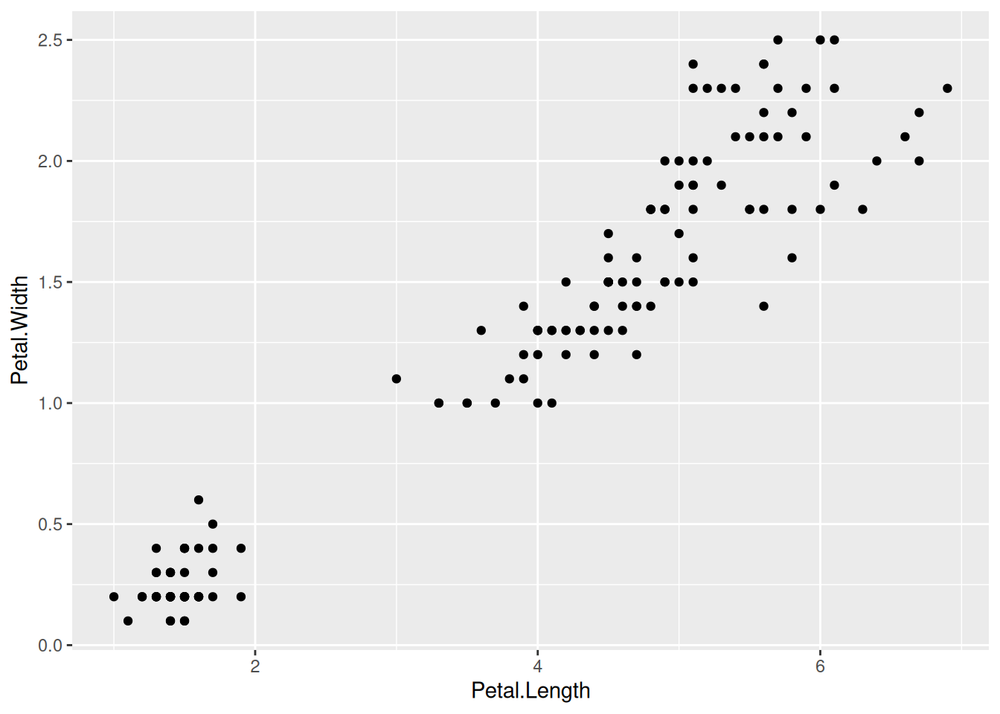
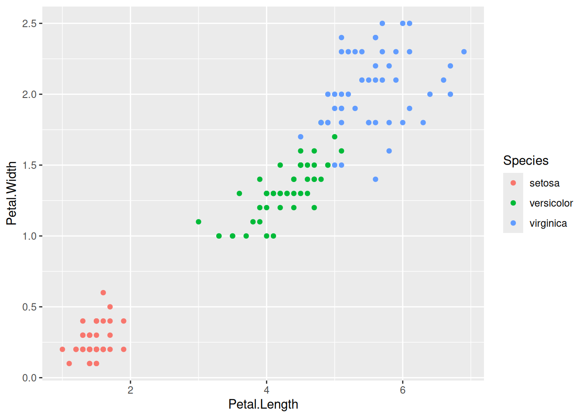
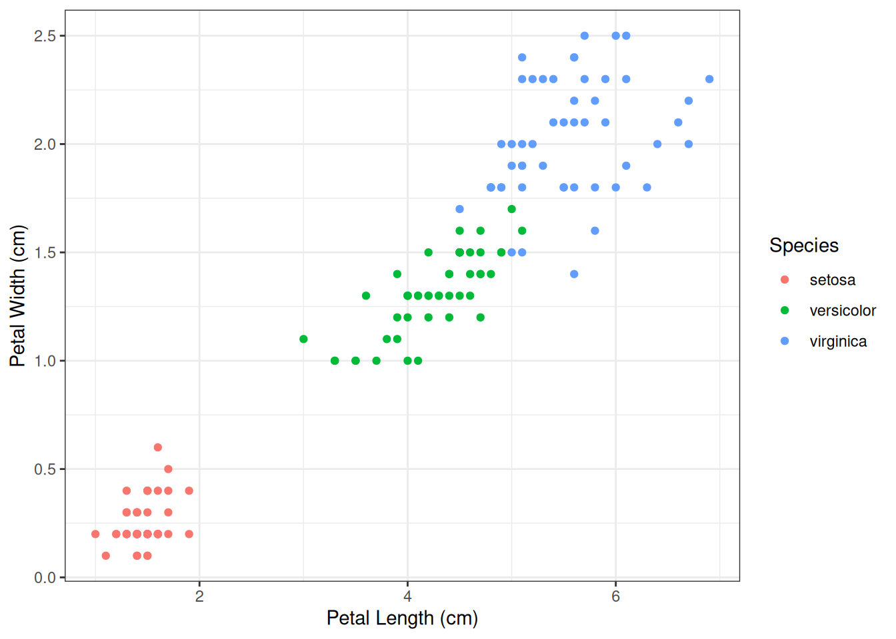
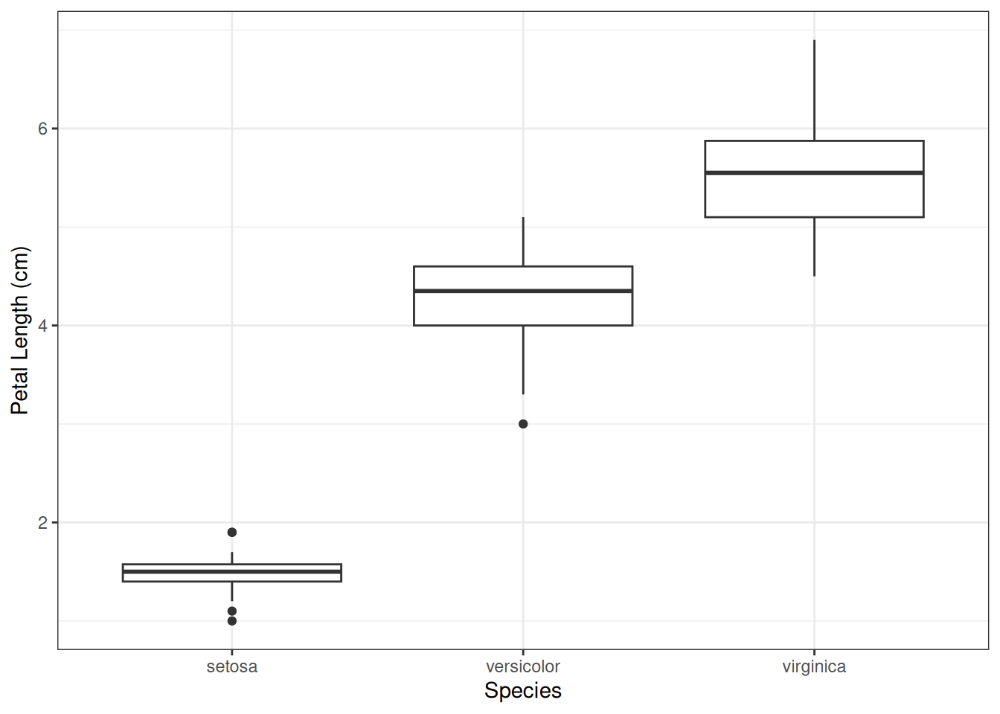

10 Plotting with ggplot
Now we will create a scatter plot using the iris dataset and ggplot(), which is part of the tidyverse.
This plot will help us answer the following question:
Research Question:
Is there a relationship between petal length and petal width?
10.1 A basic ggplot plot
The ggplot() function itself only has two required arguments:
- the name of the data frame with your data (in this case,
data = irisdata) - an aesthetic that defines what your x and variables are
The aesthetic is formatted like: aes(x = x_var_name, y = y_var_name). so if we want to compare petal length on the x-axis with petal width on the y-axis, we would use: aes(x = Petal.Length, y = Petal.Width).
However, the ggplot() function alone is not enough to make a graph.
We must also add the different parts of the figure as layers, with a + between each layer.
Layers of data are added with geom_x() functions, where the x changes depending on the type of graph you want to make.
Tip: For a basic scatter plot, use geom_point() to plot the data as x-y points.
Write out the minimum code to make a scatter plot using the iris data, and run it.
ggplot(data = irisdata, aes(x = Petal.Length, y = Petal.Width)) +
geom_point()
10.2 Adding color based on a third variable
Remember that the iris data contain measurements of three species. It would probably be useful to plot each species in a different colour, so we can see where they are on the graph.
If you want to change the colour of points based on a third variable, you need to add it to the aesthetic argument as shown below. ggplot will automatically add a legend.
Modify your existing code to match the example below.
ggplot(data = irisdata,
aes(x = Petal.Length, y = Petal.Width, colour = Species)) +
geom_point()
10.3 Adding axis labels and changing the theme
Right now the axis labels are just the column names - helpful but not formatted properly.
You can modify your axis labels using the labs() function.
You can also change the theme to something a bit more minimalist.
Tip: Remember that each layer in a ggplot graph is separated by a +
Modify your existing code again to match the example below.
ggplot(data = irisdata,
aes(x = Petal.Length, y = Petal.Width, colour = Species)) +
geom_point() +
labs(x = "Petal Length (cm)", y = "Petal Width (cm)") +
theme_bw()
10.4 Making a boxplot
The scatter plot with different colours for each species made it clear that the different species seem to have different size petals.
We can make this even more obvious with a box plot.
Q: What variables would you want to put on the x-axis and y-axis to make a box plot showing the difference in size between the three species?
This time, copy and paste your ggplot code to create a new code block beneath the previous one.
Modify the new block to match the example below.
ggplot(data = irisdata, aes(x = Species, y = Petal.Length)) +
geom_boxplot() +
labs(x = "Species", y = "Petal Length (cm)") +
theme_bw()
Exercise 1:
Make two new graphs - one scatter plot and one boxplot - using different variables from the iris data set.
Hint: You will need to change the arguments telling R which data to use.
Exercise 2:
Try to add colour by species to one or both of your boxplots.
Why might you want to do this in a figure you are making?